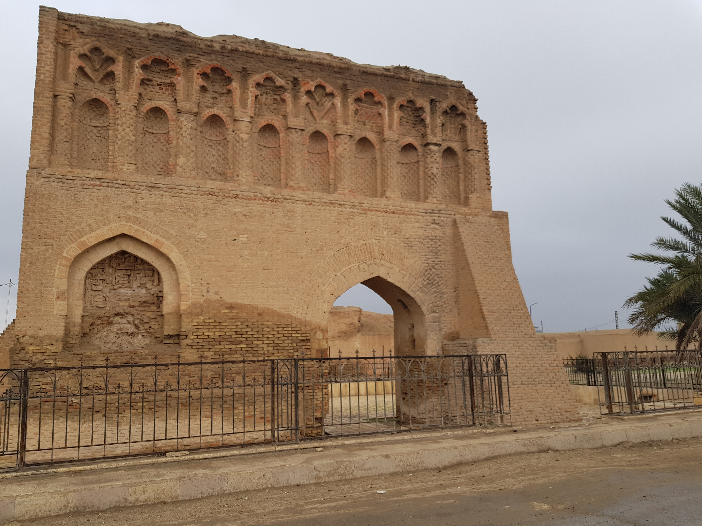

المعالم التاريخية في الرقة
قلعة جعبر
قلعة تاريخية على بحيرة الأسد، تعود للقرن الحادي عشر، تُعد رمزاً للعمارة الإسلامية.

سور الرقة الأثري
بقايا سور المدينة العباسية، بناه المنصور عام 772 م، يعكس تخطيط المدن الإسلامية.
متحف الرقة
يضم آثاراً من الرقة، الرصافة، وهالاف، يبرز تاريخ المنطقة من العصر البرونزي إلى الإسلامي.

قصر البنات
موقع أثري في الرقة، يعود للعصر العباسي، يحتوي على بقايا قصر ومسجد.